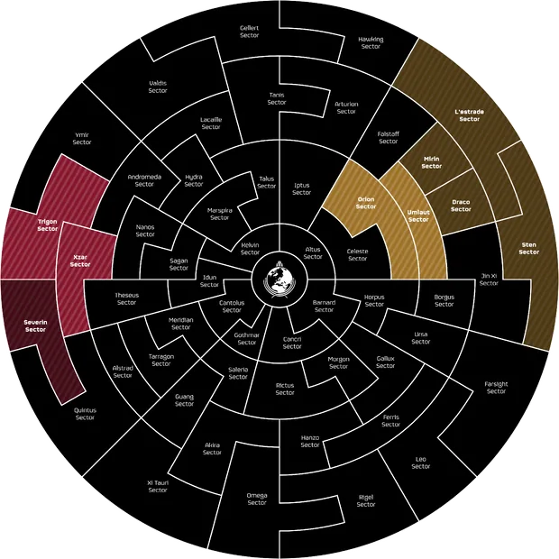
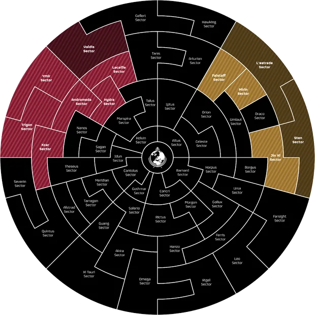

Mort/Battles
莫尔第一战役——的伟大胜利 Xzar 分区
| First Battle of Mort | |
|---|---|
| 阵营 | |
| Start Date | Feb. 27th (?) |
| End Date | Feb. 28th (?) |
| 行星 | Mort |
| 操作 | |
| Group | |
| Casualties | Around 10 million 绝地潜兵 K.I.A. |
| 重要指令 | 否 |
| Summary | Mort liberated. |
背景
the 机器人 have launched cowardly 惊讶 攻击 on 多个 highly-populated 超级地球 planets。 超级地球 武装力量 in the region have been overrun. Million of citizens are in grave 危险 of death, or disenfranchisement. This grievous 攻击 on Freedom will not go unanswered. The homes of our citizens must be defended.
the Draupnir has fallen, 绝地潜兵 in Severin 分区 were cut off. Now, 绝地潜兵 focused on liberating Mort, an 重要 行星 in the Xzar 分区.
战略与重要性
Mort was an 重要 行星, it was 必需 for securing Pöpli IX.
战斗
Not much is known about the battle. We suppose that it started on 27th of 2月, and ended on 28th of 2月. What we know, is that it was for sure won by The 绝地潜兵.
纪念画廊

莫尔第二战役——兹亚尔分区大保卫战
| Second Battle of Mort | |
|---|---|
| 阵营 | |
| Start Date | Apr. 23rd |
| End Date | Apr. 24th |
| 行星 | Mort |
| 操作 | |
| Group | |
| Casualties | 约400万绝地潜兵K.I.A. |
| 重要指令 | 防御 on Two Fronts |
| Summary | 防御 successful. |
背景
自由再次遭到攻击。在一种险恶的同步巧合中，终结族和机器人同时发动了大规模攻势。绝地潜兵如今必须同时在两条战线保卫我们的公民。 Mort was one of the targets. 机器人 attacked it, after many other planets were brutally conquered by 机器人.
战略与重要性
Mort was an 重要 行星, as it is located in Xzar 分区. If captured, 机器人 would gain a foothold in another 分区.
战斗
The battlle has ended on 23rd of April, and ended around 14 hours later. It was won by 绝地潜兵. 机器人 forces in the 分区 were completely obliterated and as for now, they didn't even try to come back once again to this 分区.
莫尔第三战役——兹亚尔分区第二次保卫战
| Second Battle of Mort | |
|---|---|
| 阵营 | |
| Start Date | Jun. 20th |
| End Date | Jun. 23rd |
| 行星 | Mort |
| 操作 | |
| Group | |
| Casualties | |
| 重要指令 | 否 | 保卫兹亚尔分区 |
| Summary | 绝地潜兵 were able to liberate Mort after it was lost in the first phase of the battle.
The 解放 of Mort allowed 绝地潜兵 to liberate Pöpli IX at the same time, marking the first successful "Gambit" move in the 历史 of the 第二次银河战争. |
背景
While the 绝地潜兵 were having fun wiping out hordes of 终结族, the 机器人 正面 was all but abandoned. The 机器人 decided to use this opportunity to 攻击 the Xzar 分区.
战略与重要性
Mort is a strategically 重要 行星, placed in the northern part of the Xzar 分区. It's the fastest way for 机器人 to reach the heart of Xzar 分区 and 征服 it.
战斗
The battle began on June 20th, when 机器人 launched an 攻击 on SEAF positions on the 行星.
The 绝地潜兵 were greatly outnumbered, as most of them were focused on the 终结族 正面. The 机器人 quickly took the 行星.
Some time later, a new 重要指令 was 已公布, ordering the 绝地潜兵 to liberate and defend the entire Xzar 分区.
机器人 launched 2 攻击, one on Vandalon IV (Trigon 分区) and the other on Ingmar (Xzar 分区). The 绝地潜兵 concentrated on defending Ingmar, which delayed the 解放 of Mort. Soon after Ingmar was successfully defended, the 机器人 launched an 攻击 from their 哨站 on Mort, 索敌 Pöpli IX.
The 绝地潜兵 decided to encircle the 机器人 攻击 forces by taking Mort. This move was successful, and 绝地潜兵 were able to liberate 2 planets at the same time.
纪念画廊
